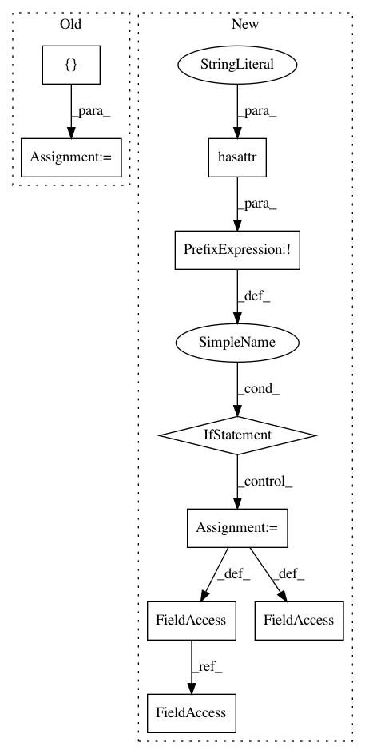

f9dd2e3636db61ee1b4d32ee4f494fd9e71adc12,cleverhans/attacks.py,FastGradientMethod,generate_np,#FastGradientMethod#Any#Any#,159
Before Change
if params["Y"] is None:
X_adv, = batch_eval_com([self.x], [self.default_graph], [X])
else:
X_adv, = batch_eval_com([self.x, self.y], [self.default_graph],
[X, params["Y"]])
return X_adv
After Change
import tensorflow as tf
// Generate this attack"s graph if it hasn"t been done previously
if not hasattr(self, "_x"):
input_shape = list(X.shape)
input_shape[0] = None
self._x = tf.placeholder(tf.float32, shape=input_shape)
self._x_adv = self.generate(self._x)
// Run symbolic graph without or with true labels
if params["Y"] is None:
feed_dict = {self._x: X}
else:
feed_dict = {self._x: X, self.y: params["Y"]}
return self.sess.run(self._x_adv, feed_dict=feed_dict)
In pattern: SUPERPATTERN
Frequency: 3
Non-data size: 9
Instances
Project Name: tensorflow/cleverhans
Commit Name: f9dd2e3636db61ee1b4d32ee4f494fd9e71adc12
Time: 2017-03-29
Author: ngp5056@cse.psu.edu
File Name: cleverhans/attacks.py
Class Name: FastGradientMethod
Method Name: generate_np
Project Name: tensorflow/cleverhans
Commit Name: f9dd2e3636db61ee1b4d32ee4f494fd9e71adc12
Time: 2017-03-29
Author: ngp5056@cse.psu.edu
File Name: cleverhans/attacks.py
Class Name: Attack
Method Name: generate_np
Project Name: chainer/chainercv
Commit Name: f5ff0f5fb3933bb4e704ce7947e2bd5a99ef8358
Time: 2018-05-02
Author: Hakuyume@users.noreply.github.com
File Name: tests/links_tests/model_tests/yolo_tests/test_yolo_base.py
Class Name: DummyYOLO
Method Name: _decode